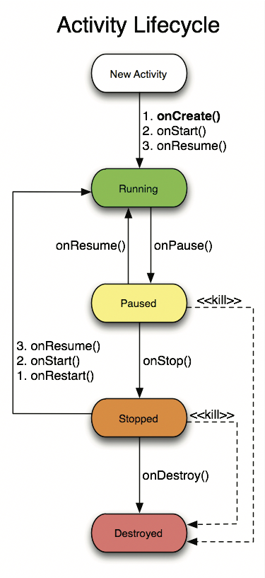

Android 入門 (4)
MVX 架構、Activity 生命週期請試著想像...
- 你的專案越來越龐大
- 程式碼越寫越多 可能一個檔案就有幾千行了...
- 找不到 function 寫在哪裡 ......
好亂啊！！
於是，你決定 分類整裡！
M - V - X
windsuzu.github.io , academy.realm.ioM - V - X ?
- MVC
- MVP
- MVVM
MVC
- Model
- 資料：資料庫
- 狀態：畫面上的值
- 邏輯運算：單位換算、資料格式
- View
- 畫面的呈現
- 又或是說，邏輯結果
- Controller
- Model 和 View 的溝通橋樑
MVP
- Model
- View
- Presenter
- 不需要一邊處理 UI 的事情，一邊忙著執行各種動作
MVVM
- Model
- View
- ViewModel
Activity Lifecycle
developer.android.comActivity Lifecycle - Starts
onCreate()- Called when the activity is first created.
onStart()- Called when the activity is becoming visible to the user.
onResume()- Called when the activity begins interacting with user.
Activity Lifecycle - Running
- If an activity in the foreground of the screen (at the top of the stack), it is active or running.
onPause()- The activity is no longer visible. Commit unsaved changes.
Activity Lifecycle - Paused
- If an activity has lost focus but is still visible (that is, a new non-full-sized or transparent activity has focus on top of your activity), it is paused.
- A paused activity is completely alive, but can be killed by the system in extreme low memory situations.
onStop()- The activity is no longer visible beacuse another activity is active.
Activity Lifecycle - Stopped
- If an activity is completely obscured by another activity, it is stopped.
- It still retains all state and member information, however, it is no longer visible to the user and it will often be killed by the system when memory is needed elsewhere.
onDestroy()- The final call before the activity is destroyed.
Activity Lifecycle - Destroyed
- If an activity is paused or stopped, the system can drop the activity from memory by either asking it to finish, or simply killing its process.
- When it is displayed again to the user, it must be completely restarted and restored to its previous state.